― これまでのイベント（記録） ―
| 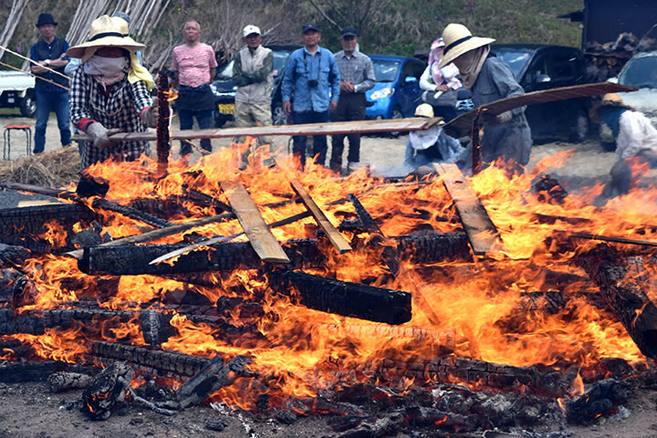 |
| （画像をクリックで拡大します） |
『第24回春の縄文野焼き祭り～大地のふところへ、縄文をさがしに』が開催されました。
野焼き晴れの一日でしたが、途中激しい突風や、にわかに雨雲の通過もあり波乱万丈の一日。
万難をしのいで縄文の火は燃え続け、人々の熱気もまた立ちのぼります。
=∴=∵=∴=∵=∴=∵=∴=∵=∴=∵=∴=∵=∴=∵=∴=∵=∴=∵=∴=∵=∴=∵=∴=∵=∴=∵=∴=
４月２９日朝は、野鳥の声もにぎやかな青空広がる野焼き日和で始まりました。
野炉もよく乾燥したベストな状態。
特に大きな土器を焼く男の野炉では、すこし早めに午前６時の火入れ。
まもなく遠方からの参加者も到着して８時前には野焼きスタッフも勢揃いし、ふたつの野炉に火がともります。

|

|
| 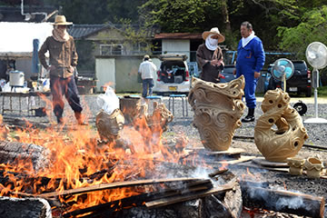 |

|
| 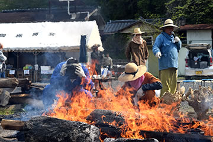 |

|
| 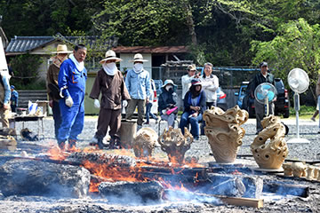 | 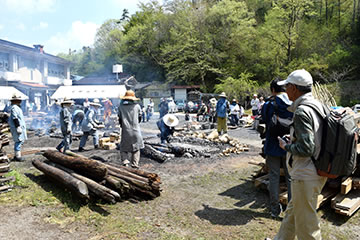 |
| （画像をクリックで拡大します） | |
=∴=∵=∴=∵=∴=∵=∴=∵=∴=∵=∴=∵=∴=∵=∴=∵=∴=∵=∴=∵=∴=∵=∴=∵=∴=∵=∴=
ほどなくして炙り焼きが開始。
今回焼き上げるのは、陶芸教室生や法曽焼同行会員の個性的な土偶・土器・オブジェなど約120点。
３度目となる「女たちの縄文野焼き」の野炉には、女性たちによるいのちへの祈りに満ちたたくさんの作品
が並びました。
陶芸教室で長年学び熟練した見事な火炎土器、縄文文様を独自に駆使した創作縄文土器も目を引きます。
いずれも縄文の心とスピリットが感じられる作品群です。

|
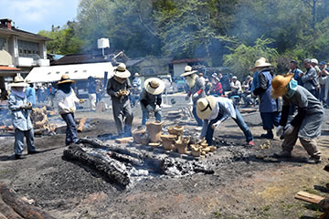 |

|

|
| （画像をクリックで拡大します） | |
順調に進んでいた野焼きですが、昼前後になるとときおり突風が吹き、炎が渦巻き火の舌が舞いはじめました。
さらには黒い雨雲が上空を行きすぎ、そしてポツリポツリと落ちていた雨粒がにわかに降り出します。
雨に負けないよう、スタッフ総出で木をくべて炎の勢いで作品を守ります。
祈りが届いたのか、やがて雨雲は通りすぎて作品も無事な姿。
危機を脱して皆ほっと一息をつきます。
今回野焼きスタッフとして初参加の方々も力を出し、全員が心をひとつにして無事乗り切りました。
| 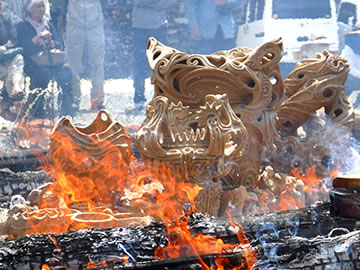 | 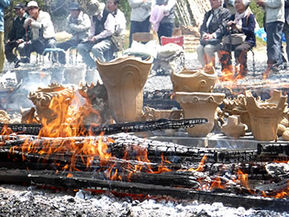 |
| 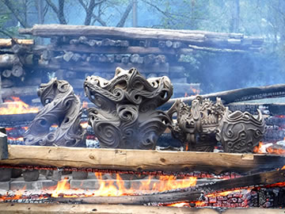 | 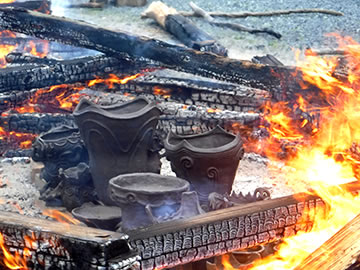 |
| （画像をクリックで拡大します） | |
=∴=∵=∴=∵=∴=∵=∴=∵=∴=∵=∴=∵=∴=∵=∴=∵=∴=∵=∴=∵=∴=∵=∴=∵=∴=∵=∴=
やがて野焼きの炎も最高潮に達します。
野炉の温度も順調に上昇し、最後の大焚きで作品を包み込む赤い炎が空高く舞い上がりました。
| 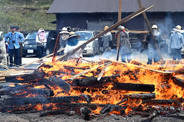 |

|
| 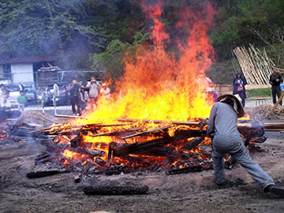 | 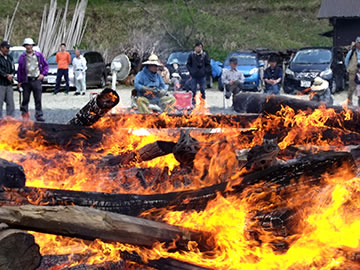 |
| 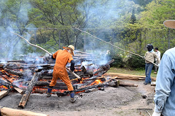 |

|
| 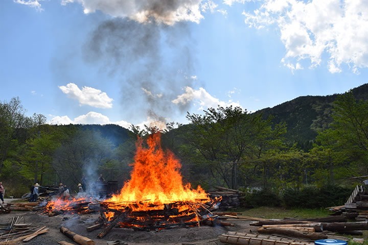 | |
| （画像をクリックで拡大します） | |
=∴=∵=∴=∵=∴=∵=∴=∵=∴=∵=∴=∵=∴=∵=∴=∵=∴=∵=∴=∵=∴=∵=∴=∵=∴=∵=∴=
火の子宮から生まれ出たばかりの新しい命を宿した作品は、みな火の力をまとって、力強く優しくもあります。
今回の野焼きでは県内はもとより遠くは東京・大阪・三重・香川・広島・熊本など各地から延べ150名ほどが
訪れ、縄文野焼きと縄文体験の一日を過ごしました。

|

|

|

|

|

|

|

|
| 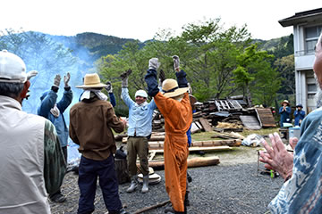 | 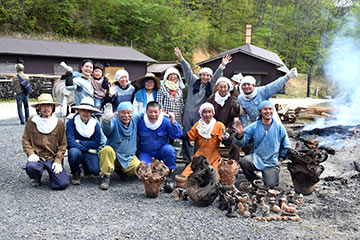 |
| （画像をクリックで拡大します） | |
=∴=∵=∴=∵=∴=∵=∴=∵=∴=∵=∴=∵=∴=∵=∴=∵=∴=∵=∴=∵=∴=∵=∴=∵=∴=∵=∴=
《縄文竪穴式住居づくり祈念セレモニー》
現在、猪風来美術館広場で縄文式竪穴住居「縄文 大地の気場庵(きばあん)」づくりで進行中です。
縄文の文化や造形美は、大地に根ざした竪穴住居の暮らしから生まれました。
大地のふところに抱かれるように建てる竪穴住居は「大地の子宮」であり「生命が生まれ育まれる場所」です。
昨秋からカヤの収集や木の伐採の準備を始め、今春は木の皮むき・盛土作業を終えました。
今回のセレモニーでは、これから行ってゆく「御柱立て・棟上げ」「屋根の茅葺き」で皆の力と心を合わせ、
無事完成を祈る縄文カムイノミの儀式を竪穴住居基盤の中で行いました。

|
| （画像をクリックで拡大します） |
《大地へ✌願いの土偶つくり》
今回、完成した竪穴住居の中に安置して皆のメッセージを大地へ伝える土偶づくりを呼びかけました。
土偶を寄付された方は、完成後の竪穴住居へぜひご自分の作品を探しにおいでください。
多数のご参加本当にありがとうございました。
この『大地へ✌願いの土偶つくり』はまた継続して行いますので、ご協力よろしくお願いいたします。
=∴=∵=∴=∵=∴=∵=∴=∵=∴=∵=∴=∵=∴=∵=∴=∵=∴=∵=∴=∵=∴=∵=∴=∵=∴=
《縄文体験コーナー》
～縄文土器煮炊き体験～
縄文土器での煮炊きでは、新見の山の恵み「猪汁」を作りました。
いつも手伝ってくれる「土器女子」の面々が手際よく薪をくべて土器を温めます。
土器が十分に温まったら水を入れ、火力を上げながらたっぷりの茸・筍・野菜と猪肉を入れます。
土器はいったん沸き立つと保温性にすぐれ熱効率抜群です。
出来上ったおいしい汁が振る舞われ、みな舌鼓を打っていました。

|
| （画像をクリックで拡大します） |
～粘土でつくろう～
土は母なる大地の肉そのもの。
人は粘土に触れると思わず楽しく安らかな気分になり、無垢な自分を見つけます。
ちいさな子から大人まで夢中になって粘土を捏ねるひととき。
縄を転がして縄目を入れるとき、心は縄文人に早変わりします。
これらの作品は後日野焼きしてお渡しします。
～勾玉をつくろう～
白・黒・ピンクのやわらかな滑石を紙やすりなどでこすって勾玉の形にします。
ひたすら削り続けてやっと思うような形が見えてくると思わず笑顔に。
思い思いの勾玉ペンダントのできあがりです。

|

|
| （画像をクリックで拡大します） | |
=∴=∵=∴=∵=∴=∵=∴=∵=∴=∵=∴=∵=∴=∵=∴=∵=∴=∵=∴=∵=∴=∵=∴=∵=∴=∵=∴=
《販売コーナー》
地元法曽焼同好会の会員のみなさんが前日から準備。
また地元特産品法曽茶・法曽焼の販売も行われました。
昼食には手打うどん・猪カレーうどん・猪カレーライス・飲み物などが提供されました。
中にはうどんを３杯もおかわりする人もおり、好評を博しました。
| 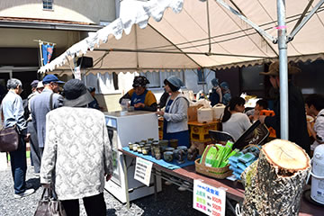 |

|
| （画像をクリックで拡大します） | |
=∴=∵=∴=∵=∴=∵=∴=∵=∴=∵=∴=∵=∴=∵=∴=∵=∴=∵=∴=∵=∴=∵=∴=∵=∴=∵=∴=
| 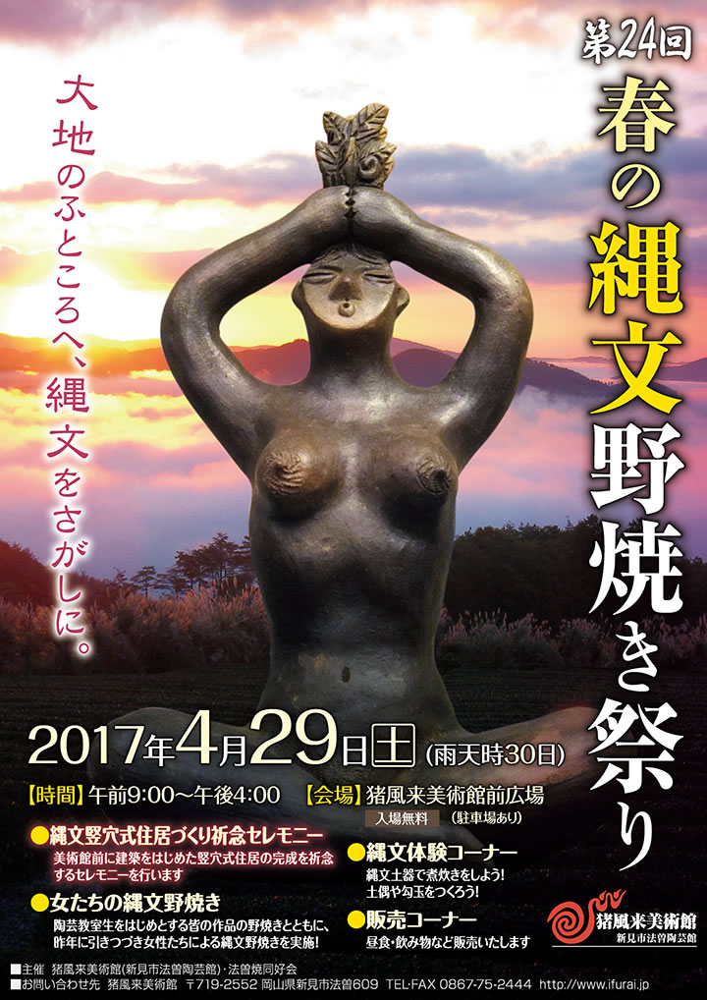 |

|
| 【「第24回 春の縄文野焼き祭り」チラシ】 →PDF版を開く |